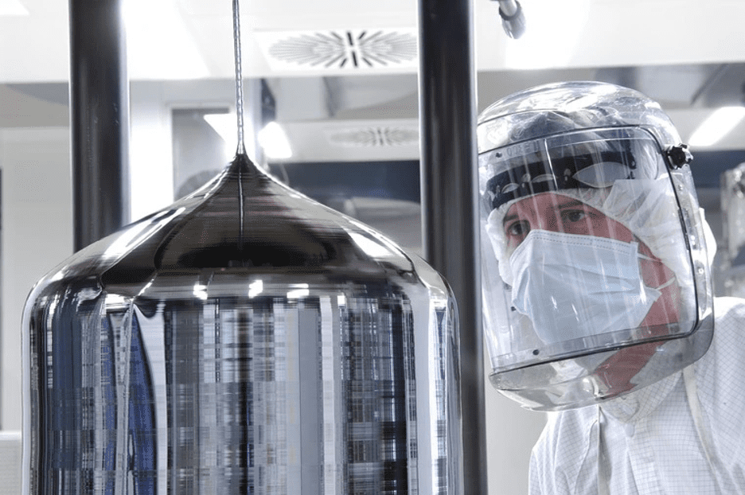

.svg)

.svg)
От песка до процессора: как производятся чипы

Процессоры окружают нас повсюду. Они есть в каждом электронном девайсе и отвечают за его работу. На их характеристики мы обращаем внимание при покупке компьютеров и сотовых телефонов. Однако мало кому известно, как и из чего делают эти сложнейшие миниатюрные устройства.
В техническом плане современный процессор представляет собой большую микросхему, состоящую из миллиардов элементов — транзисторов, они же дискретные переключатели. Транзисторы отвечают за включение и выключение, то есть пропуск и блокировку электрического тока.
Дискретные переключатели позволяют логическим схемам компьютера функционировать в двоичной системе. Проход электротока — это единица, а отключение — ноль. Различная последовательность этих цифр и образует информацию: программы, текст, видео, картинки или музыку.
Размеры транзисторов измеряют в нанометрах, это миллиардная часть метра. Давайте посмотрим, как удается производить такие микроскопические элементы.
Экскурсия на производство
Для начала представим, что вы попали на завод по производству чипов. Первое, что попросят сделать — тщательно умыться и вымыть руки. Косметика и парфюм строго запрещены. После гигиенических процедур нужно надеть специальный костюм: комбинезон, ботинки и сетку для волос. Перед помещением, где непосредственно изготавливают чипы, выполняют обдув сильным потоком, чтобы обеспечить максимальную стерильность.
Попадание на рабочую заготовку мельчайшей частицы пыли чревато браком — отсюда и беспрецедентные меры по защите. Воздух в цехах чище, чем в операционных — класс чистоты 10. Это значит, что в каждом кубическом метре содержится не больше десяти частиц толщиной в полмикрона (размером с небольшую бактерию).
В почти стерильных помещениях очень тихо. Вибрация практически отсутствует, раздается лишь небольшой гул от работающего оборудования. В таких условиях и проходят основные этапы производственного процесса, но что происходит до этого?
Сначала был кремний
Точнее, диоксид кремния, который в больших количествах содержится в обычном песке. Атомная структура SiO2 дает возможность изготавливать микросхемы любой конфигурации. Из рыхлой горной породы получают технический, а затем электронный кремний с чистотой 99,9999999%.
На следующем этапе электронный кремний расплавляют, помещают в него затравочный кристалл в форме карандаша, вокруг которого вырастет кристаллическое твердое тело — буля. Диаметр такого слитка составляет 300 мм, высота — около 2 м, а вес — до 100 кг.
В процессе роста затравочный кристалл вращается и медленно поднимается, увлекая за собой монокристалл. После достижения нужных размеров булю тестируют на соответствие параметрам чистоты, далее устанавливают на алмазную резку. Ее разрезают на тончайшие пластины толщиной 1 мм. Поверхность каждой пластины полируют до зеркального блеска. Теперь кремниевая заготовка готова для отправки на завод по изготовлению чипов.
Основные этапы производства процессоров
Производственный процесс включает более двух тысяч операций. Выделим из них три основных этапа:
- Печать транзисторов — микросхемы печатают посредством фотолитографии на специальных машинах. Цель технологии — сформировать на кремниевой подложке изображение, чтобы получить заданную топологию микросхемы. На пластину наносят тончайший слой светочувствительного полимера — фоторезиста. Далее осуществляют облучение через оптическую систему, проявление и обработку поверхности. Процесс напоминает печать черно-белых фотографий, когда на пленку светят лампой, подложив снизу фотобумагу. Машина повторяет операцию несколько десятков раз. Между слоями находится диэлектрик, выполняющий роль изолятора. В результате образуются миллиарды транзисторов, которые пока еще не соединены между собой.
- Соединение дискретных переключателей выполняют в определенном порядке, который зависит от архитектуры процессора. Производители держат ее в секрете. На данном этапе наносят токопроводящий слой, ставят фильтр и закрепляют транзисторы.
- Тестирование и нарезка пластины. Каждую микросхему проверяют на брак, затраты электроэнергии и нагревание. После этого пластины разрезают на 100–150 отдельных чипов, которые оснащают крышкой для защиты кристалла от механических повреждений и отвода тепла. Самые удачные микропроцессоры устанавливают в дорогие серверные продукты. Если ЦП имеет небольшие недочеты, его не бракуют, а отдают в массовую продажу.
На протяжении всего процесса производства кремниевые пластины находятся в фупах — герметичных контейнерах с классом чистоты 1 (кубический метр воздуха содержит не более одной частицы размером в полмикрона). По производственной линии фупы передвигают сотни роботов. Они бегают по рельсовым дорожкам, доставляя кремниевые заготовки к различным инструментам.
Сроки производства
Сколько времени уходит на создание чипов? Производители микропроцессоров уверяют, что это не забег на короткую дистанцию.
На выращивание були необходимо два месяца. После этого заготовки отправляют на завод чипмейкера. Выполнение основных этапов может занимать три месяца. На изготовление тестовой партии производитель тратит больше полугода, если считать время со всеми необходимыми тестами. Любой сбой на производственной линии вызывает простои. Возобновляют работу только после исправления выявленных недочетов.
Если начинать бизнес с нуля, потребуется не меньше пяти лет и огромные финансовые затраты. По самым скромным подсчетам строительство фабрики для производства микросхем обойдется в 8,5 миллиарда долларов, а в исследования и разработки придется вложить минимум 2 миллиарда.
Проблемы будущего
Первый коммерческий чип на кремниевой подложке создала компания Intel. Она показала свое революционное изобретение в 1971 году. Intel 4004 содержал 2250 дискретных переключателей. К 1978 году число транзисторов увеличилось в десятки тысяч раз. В Intel 8086 оно составило уже 29 000. В современных ЦП это количество достигает нескольких миллиардов.
Один из основателей Intel Гордон Мур в 1965 году выявил важную закономерность. Число переключателей каждые два года увеличивалось вдвое. Уменьшение геометрических размеров транзистора — единственный способ удваивать их количество, в результате повышая производительность процессора.
Сделать это без изменения техпроцесса невозможно. Техпроцессом чипа называют длину затвора, который решает — тока нет (0) или же ток есть (1). В какой-то момент технология производства достигла того, что параметры затвора больше нельзя было уменьшать. Тогда на помощь пришло еще одно открытие — новая структура FinFET. Затвор оказался приподнят над кремниевой подложкой, что дало возможность продолжать менять размеры дискретных переключателей в меньшую сторону.
После того как технология достигла 32 нм, понятие техпроцесса больше стало напоминать маркетинговую уловку производителей, чем действительные характеристики. Для потребителя выполнение закона Мура означает, что каждый новый процессор лучше предыдущего. Однако до сих пор не существует единого метода подсчета. На деле получается, что под техпроцессом, например, 10 нм каждый чипмейкер подразумевает что-то свое. В итоге количество и плотность транзисторов — приблизительные метрики.
Весной 2022 года компания AMD представила первую серию потребительских процессоров на техпроцессе 5 нм под названием Ryzen 7000. Samsung Electronics летом этого года анонсировала запуск производства микросхем с техпроцессом 3 нм. TSMC тоже планирует наладить выпуск продукции с аналогичными характеристиками. Intel не спешит догонять и перегонять конкурентов, остановившись на техпроцессе 10 нм. Ее микропроцессоры уступают в нанометрах, зато превосходят в производительности за счет более высокой плотности транзисторов.
15 лет назад Мур заявил, что выведенный им принцип больше не действует. Он обосновал это тем, что по естественным законам природы процессоры не могут функционировать еще быстрее. По прогнозам, эмпирическое наблюдение об удвоении числа транзисторов формально будет считаться рабочим до конца 2025 года. Как пойдет развитие чипов дальше, пока неясно.
Итог
Процесс создания чипов невероятно сложен и дорог. Даже осознать сложно, что мы научились уже создавать структуры размеров в атомы. Но вскоре уменьшать техпроцесс будет уже некуда. Но возможно, что к тому времени квантовые компьютеры смогут совершить рывок в развитии и стать полноценной заменой существующим технологиям процессоров.